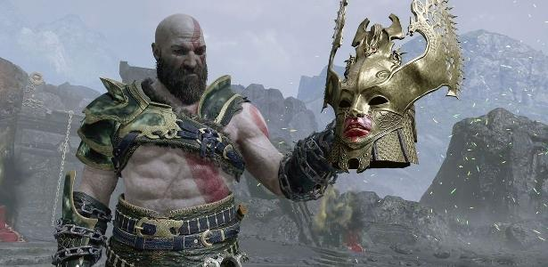

Sony registra patente de IA que joga sozinha para ajudar jogadores
07/01/2025

Ideia é evitar que pessoas fiquem travadas em alguma parte específica de games
A ideia central é usar Inteligência Artificial para ajudar jogadores que ficam "travados" em partes difíceis ou puzzles complexos, sem que eles precisem sair do jogo para procurar tutoriais no YouTube ou guias na internet.
Aqui estão os pontos principais de como essa tecnologia funcionaria, de acordo com o registro:
Modo Guia: A IA assume o controle do personagem e demonstra visualmente como resolver um puzzle ou vencer um desafio, funcionando como um "fantasma" que o jogador deve seguir.
Modo Completo: O sistema joga e completa o trecho difícil sozinho no lugar do jogador, devolvendo o controle logo em seguida.
Aprendizado Real: Diferente de scripts prontos, essa IA seria treinada com base em gameplays de outros jogadores reais que já superaram aquele desafio, tornando a solução mais natural.
Interação por Voz: Há indícios de que o jogador poderia pedir ajuda diretamente via comando de voz, solicitando que a IA "mostre o caminho" ou "resolva essa parte".
Você acha que usaria uma função dessas para passar daquele "chefe" impossível ou prefere a satisfação de vencer na raça?
